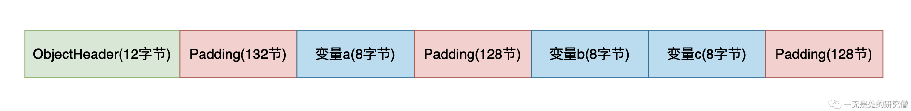
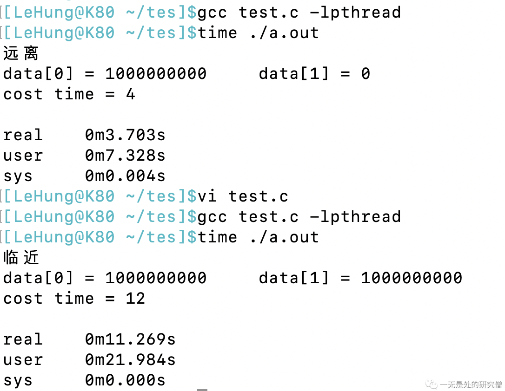

并发刺客（False Sharing）——并发程序的隐藏杀手
前言
前段时间在各种社交平台“雪糕刺客”这个词比较火，简单的来说就是雪糕的价格非常高！其实在并发程序当中也有一个刺客，如果在写并发程序的时候不注意不小心，这个刺客很可能会拖累我们的并发程序，让我们并发程序执行的效率变低，让并发程序付出很大的代价，这和“雪糕刺客”当中的“刺客”的含义是一致的。这个并发程序当中的刺客就是——假共享（False Sharing）。
假共享（False Sharing）
缓存行
当CPU从更慢级别的缓存读取数据的时候（三级Cache会从内存当中读取数据，二级缓存会从三级缓存当中读取数据，一级缓存会从二级缓存当中读取数据，缓存级别越低执行速度越快），CPU并不是一个字节一个字节的读取的，而是一次会读取一块数据，然后将这个数据缓存到CPU当中，而这一块数据就叫做缓存行。有一种缓存行的大小就是64字节，那么我们为什么会做这种优化呢？这是因为局部性原理，所谓局部性原理简单说来就是，当时使用一个数据的时候，它附近的数据在未来的一段时间你也很可能用到，比如说我们遍历数组，我们通常从前往后进行遍历，比如我们数组当中的数据大小是8个字节，如果我们的缓存行是64个字节的话，那么一个缓存行就可以缓存8个数据，那么我们在遍历第一个数据的时候将这8个数据加载进入缓存行，那么我们在遍历未来7个数据的时候都不需要再从内存当中拿数据，直接从缓存当中拿就行，这就可以节约程序执行的时间。
假共享
当两个线程在CPU上两个不同的核心上执行代码的时候，如果这两个线程使用了同一个缓存行C，而且对这个缓存行当中两个不同的变量进行写操作，比如线程A对变量a进行写操作，线程B对变量b进行写操作。而由于缓存一致性（Cache coherence）协议的存在，如果其中A线程对缓存行C中变量a进行了写操作的话，为了保证各个CPU核心的数据一致（也就是说两个CPU核心看到了a的值是一样的，因为a的值已经发生变化了，需要让另外的CPU核心知道，不然另外的CPU核心使用的就是旧的值，那么程序结果就不对了），其他核心的这个缓存行就会失效，如果他还想使用这个缓存行的话就需要重新三级Cache加载，如果数据不存在三级Cache当中的话，就会从内存当中加载，而这个重新加载的过程就会很拖累程序的执行效率，而事实上线程A写的是变量a，线程B写的是变量b，他们并没有真正的有共享的数据，只是他们需要的数据在同一个缓存行当中，因此称这种现象叫做假共享（False Sharing）。

上面我们谈到了，当缓存行失效的时候会从三级Cache或者内存当中加载，而多个不同的CPU核心是共享三级Cache的（上图当中已经显示出来了），其中一个CPU核心更新了数据，会把数据刷新到三级Cache或者内存当中，因此这个时候其他的CPU核心去加载数据的时候就是新值了。
上面谈到的关于CPU的缓存一致性（Cache coherence）的内容还是比较少的，如果你想深入了解缓存一致性（Cache coherence）和缓存一致性协议可以仔细去看这篇文章。
我们再来举一个更加具体的例子：
假设在内存当中，变量a和变量b都占四个字节，而且他们的内存地址是连续且相邻的，现在有两个线程A和B，线程A要不断的对变量a进行+1操作，线程B需要不断的对变量进行+1操作，现在这个两个数据所在的缓存行已经被缓存到三级缓存了。
- 线程A从三级缓存当中将数据加载到二级缓存和一级缓存然后在CPU- Core0当中执行代码，线程B从三级缓存将数据加载到二级缓存和一级缓存然后在CPU- Core1当中执行代码。
- 线程A不断的执行a += 1，因为线程B缓存的缓存行当中包含数据a，线程A在修改a的值之后，就会在总线上发送消息，让其他处理器当中含有变量a的缓存行失效，在处理器将缓存行失效之后，就会在总线上发送消息，表示缓存行已经失效，线程A所在的CPU- Core0收到消息之后将更新后的数据刷新到三级Cache。
- 这个时候线程B所在的CPU-Core1当中含有a的缓存行已经失效，因为变量b和变量a在同一个缓存行，现在线程B想对变量b进行加一操作，但是在一级和二级缓存当中已经没有了，它需要三级缓存当中加载这个缓存行，如果三级缓存当中没有就需要去内存当中加载。
- 仔细分析上面的过程你就会发现线程B并没有对变量a有什么操作，但是它需要的缓存行就失效了，虽然和线程B共享需要同一个内容的缓存行，但是他们之间并没有真正共享数据，所以这种现象叫做假共享。
Java代码复现假共享
复现假共享
下面是两个线程不断对两个变量执行++操作的代码：
class Data {
public volatile long a;
public volatile long b;
}
public class FalseSharing {
public static void main(String[] args) throws InterruptedException {
Data data = new Data();
long start = System.currentTimeMillis();
Thread A = new Thread(() -> {
for (int i = 0; i < 500_000_000; i++) {
data.a += 1;
}
}, "A");
Thread B = new Thread(() -> {
for (int i = 0; i < 500_000_000; i++) {
data.b += 1;
}
}, "B");
A.start();
B.start();
A.join();
B.join();
long end = System.currentTimeMillis();
System.out.println("花费时间为：" + (end - start));
System.out.println(data.a);
System.out.println(data.b);
}
}
上面的代码比较简单，这里就不进行说明了，上面的代码在我的笔记本上的执行时间大约是17秒。
上面的代码变量a和变量b在内存当中的位置是相邻的，他们在被CPU加载之后会在同一个缓存行当中，因此会存在假共享的问题，程序的执行时间会变长。
下面的代码是优化过后的代码，在变量a前面和后面分别加入56个字节的数据，再加上a的8个字节（long类型是8个字节），这样a前后加上a的数据有64个字节，而现在主流的缓存行是64个字节，够一个缓存行的大小，因为数据a和数据b就不会在同一个缓存行当中，因此就不会存在假共享的问题了。而下面的代码在我笔记本当中执行的时间大约为5秒。这就足以看出假共享会对程序的执行带来多大影响了。
class Data {
public volatile long a1, a2, a3, a4, a5, a6, a7;
public volatile long a;
public volatile long b1, b2, b3, b4, b5, b6, b7;
public volatile long b;
}
public class FalseSharing {
public static void main(String[] args) throws InterruptedException {
Data data = new Data();
long start = System.currentTimeMillis();
Thread A = new Thread(() -> {
for (int i = 0; i < 500_000_000; i++) {
data.a += 1;
}
}, "A");
Thread B = new Thread(() -> {
for (int i = 0; i < 500_000_000; i++) {
data.b += 1;
}
}, "B");
A.start();
B.start();
A.join();
B.join();
long end = System.currentTimeMillis();
System.out.println("花费时间为：" + (end - start));
System.out.println(data.a);
System.out.println(data.b);
}
}
JDK解决假共享
为了解决假共享的问题，JDK为我们提供了一个注解@Contened解决假共享的问题。
import sun.misc.Contended;
class Data {
// public volatile long a1, a2, a3, a4, a5, a6, a7;
@Contended
public volatile long a;
// public volatile long b1, b2, b3, b4, b5, b6, b7;
@Contended
public volatile long b;
}
public class FalseSharing {
public static void main(String[] args) throws InterruptedException {
Data data = new Data();
long start = System.currentTimeMillis();
Thread A = new Thread(() -> {
for (long i = 0; i < 500_000_000; i++) {
data.a += 1;
}
}, "A");
Thread B = new Thread(() -> {
for (long i = 0; i < 500_000_000; i++) {
data.b += 1;
}
}, "B");
A.start();
B.start();
A.join();
B.join();
long end = System.currentTimeMillis();
System.out.println("花费时间为：" + (end - start));
System.out.println(data.a);
System.out.println(data.b);
}
}
上面代码的执行时间也是5秒左右，和之前我们自己在变量的左右两边插入变量的效果是一样的，但是JDK提供的这个接口和我们自己实现的还是有所区别的。（注意：上面的代码是在JDK1.8下执行的，如果要想@Contended注解生效，你还需要在JVM参数上加入-XX:-RestrictContended，这样上面的代码才能生效否则是不能够生效的）
- 在我们自己解决假共享的代码当中，是在变量
a的左右两边加入56个字节的其他变量，让他和变量b不在同一个缓存行当中。 在JDK给我们提供的注解
@Contended，是在被加注解的字段的右边加入一定数量的空字节，默认加入128空字节，那么变量a和变量b之间的内存地址大一点，最终不在同一个缓存行当中。这个字节数量可以使用JVM参数-XX:ContendedPaddingWidth=64，进行控制，比如这个是64个字节。除此之外
@Contended注解还能够将变量进行分组：
class Data {
@Contended("a")
public volatile long a;
@Contended("bc")
public volatile long b;
@Contended("bc")
public volatile long c;
}
在解析注解的时候会让同一组的变量在内存当中的位置相邻，不同的组之间会有一定数量的空字节，配置方式还是跟上面一样，默认每组之间空字节的数量为128。
比如上面的变量在内存当中的逻辑布局详细布局如下：

OFFSET SIZE TYPE DESCRIPTION VALUE
0 4 (object header) 01 00 00 00 (00000001 00000000 00000000 00000000) (1)
4 4 (object header) 00 00 00 00 (00000000 00000000 00000000 00000000) (0)
8 4 (object header) 20 0a 06 00 (00100000 00001010 00000110 00000000) (395808)
12 132 (alignment/padding gap)
144 8 long Data.a 0
152 128 (alignment/padding gap)
280 8 long Data.b 0
288 8 long Data.c 0
296 128 (loss due to the next object alignment)
Instance size: 424 bytes
Space losses: 260 bytes internal + 128 bytes external = 388 bytes total
上面的内容是通过下面代码打印的，你只要在pom文件当中引入包jol即可：
import org.openjdk.jol.info.ClassLayout;
import sun.misc.Contended;
class Data {
@Contended("a")
public volatile long a;
@Contended("bc")
public volatile long b;
@Contended("bc")
public volatile long c;
}
public class FalseSharing {
public static void main(String[] args) throws InterruptedException {
Data data = new Data();
System.out.println(ClassLayout.parseInstance(data).toPrintable());
}
}
从更低层次C语言看假共享
前面我们是使用Java语言去验证假共享，在本小节当中我们通过一个C语言的多线程程序（使用pthread）去验证假共享。（下面的代码在类Unix系统都可以执行）
#include <stdio.h>
#include <pthread.h>
#include <time.h>
#define CHOOSE // 这里定义了 CHOOSE 如果不想定义CHOOSE 则将这一行注释掉即可
// 定义一个全局变量
int data[1000];
void* add(void* flag) {
// 这个函数的作用就是不断的往 data 当中的某个数据进行加一操作
int idx = *((int *)flag);
for (long i = 0; i < 10000000000; ++i) {
data[idx]++;
}
}
int main() {
pthread_t a, b;
#ifdef CHOOSE // 如果定义了 CHOOSE 则执行下面的代码 让两个线程操作的变量隔得远一点 让他们不在同一个缓存行当中
int flag_a = 0;
int flag_b = 100;
printf("远离\n");
#else // 如果没有定义 让他们隔得近一点 也就是说让他们在同一个缓存行当中
int flag_a = 0;
int flag_b = 1;
printf("临近\n");
#endif
pthread_create(&a, NULL, add, &flag_a); // 创建线程a 执行函数 add 传递参数 flag_a 并且启动
pthread_create(&b, NULL, add, &flag_b); // 创建线程b 执行函数 add 传递参数 flag_b 并且启动
long start = time(NULL);
pthread_join(a, NULL); // 主线程等待线程a执行完成
pthread_join(b, NULL); // 主线程等待线程b执行完成
long end = time(NULL);
printf("data[0] = %d\t data[1] = %d\n", data[0], data[1]);
printf("cost time = %ld\n", (end - start));
return 0;
}
上面代码的输出结果如下图所示：

我们首先来解释一下上面time命令的输出：
readl：这个表示真实世界当中的墙钟时间，就是表示这个程序执行所花费的时间，这个秒单位和我们平常说的秒是一样的。user：这个表示程序在用户态执行的CPU时间，CPU时间和真实时间是不一样的，这里需要注意区分，这里的秒和我们平常的秒是不一样的。sys：这个表示程序在内核态执行所花费的CPU时间。
从上面程序的输出结果我们可以很明显的看出来当操作的两个整型变量相隔距离远的时候，也就是不在同一个缓存行的时候，程序执行的速度是比数据隔得近在同一个缓存行的时候快得多，这也从侧面显示了假共享很大程度的降低了程序执行的效率。
总结
在本篇文章当中主要讨论了以下内容：
- 当多个线程操作同一个缓存行当中的多个不同的变量时，虽然他们事实上没有对数据进行共享，但是他们对同一个缓存行当中的数据进行修改，而由于缓存一致性协议的存在会导致程序执行的效率降低，这种现象叫做假共享。
- 在Java程序当中我们如果想让多个变量不在同一个缓存行当中的话，我们可以在变量的旁边通过增加其他变量的方式让多个不同的变量不在同一个缓存行。
- JDK也为我们提供了
Contended注解可以在字段的后面通过增加空字节的方式让多个数据不在同一个缓存行，而且你需要在JVM参数当中加入-XX:-RestrictContended，同时你可以通过JVM参数-XX:ContendedPaddingWidth=64调整空字节的数目。JDK8之后注解Contended在JDK当中的位置有所变化，大家可以查询一下。 - 我们也是用了C语言的API去测试了假共享，事实上在Java虚拟机当中底层的线程也是通过调用
pthread_create进行创建的。
更多精彩内容合集可访问项目：https://github.com/Chang-LeHung/CSCore
关注公众号：一无是处的研究僧，了解更多计算机（Java、Python、计算机系统基础、算法与数据结构）知识。